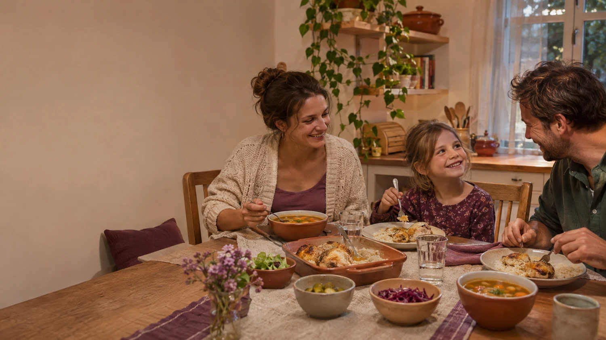
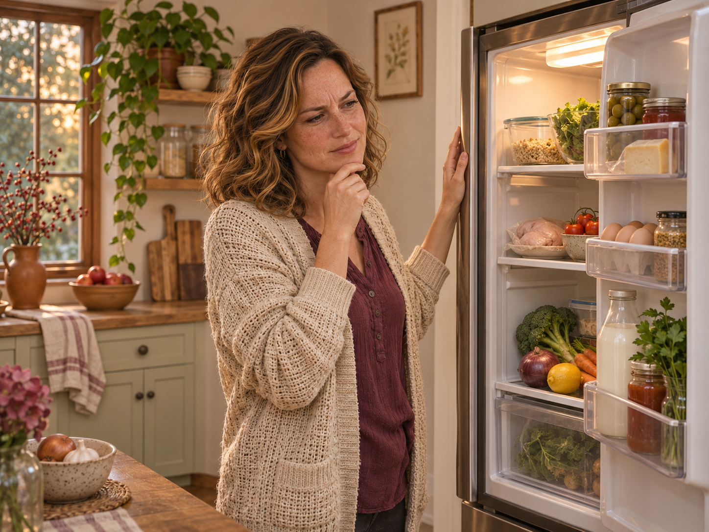
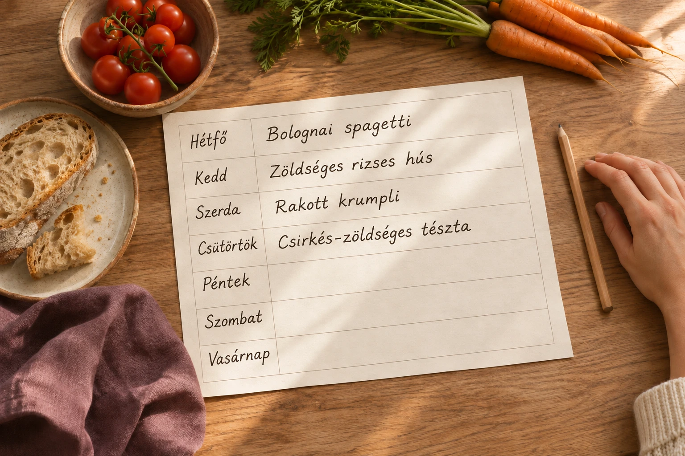
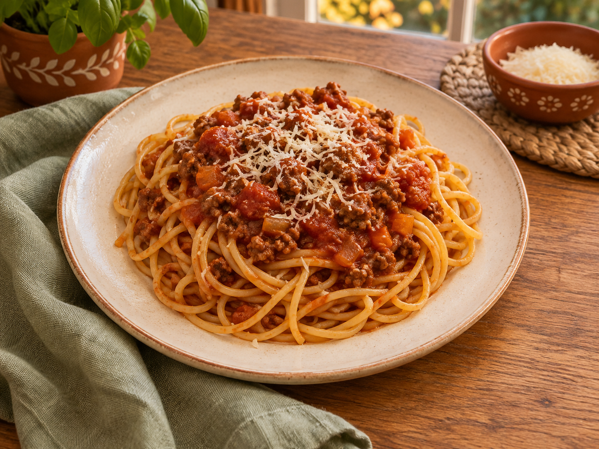
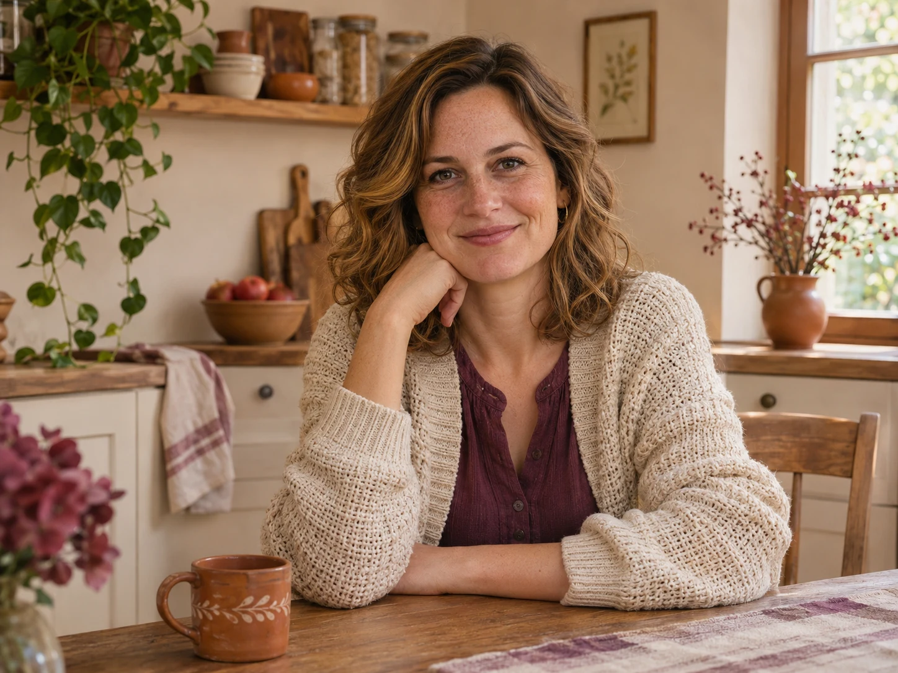
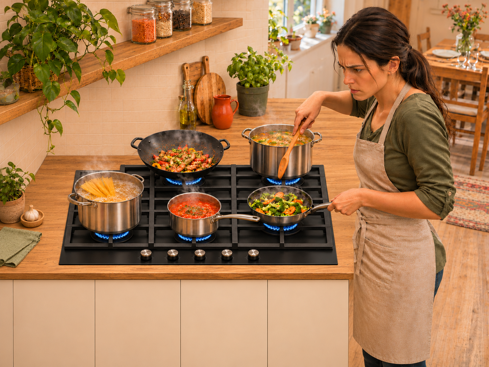
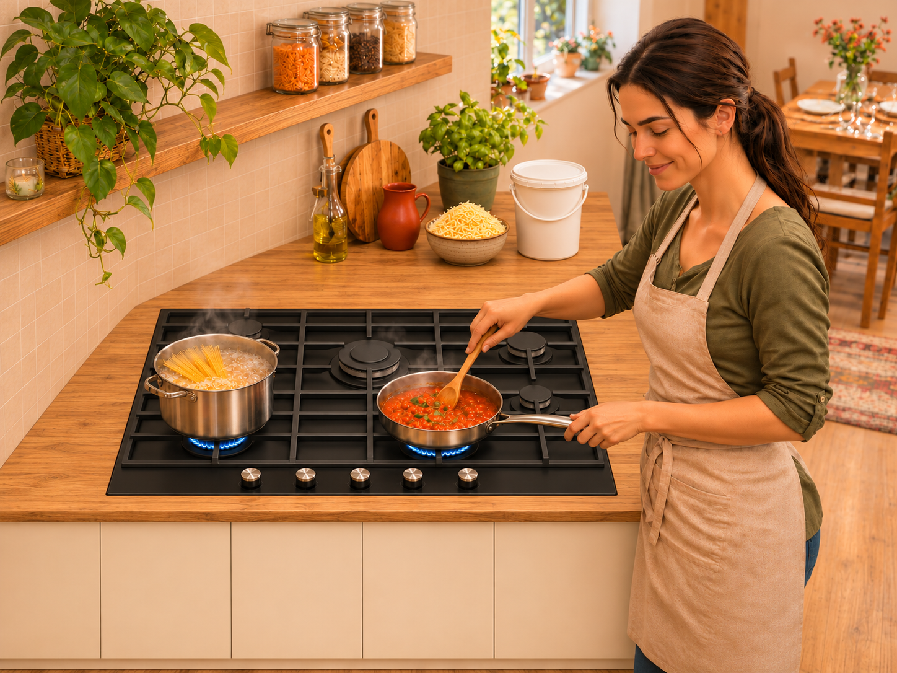

A gyerek mást enne, mint a többiek, így megint többfelé főzöl.
Ha külön főzöl a gyereknek, a saját vacsorád is később kerül az asztalra.
Gyakorlóprojekt · Nyugodt vacsorák
Nyugodt Vacsorák 6 hetes online program
Fehér Dóra dietetikus vagyok. Kisgyerekes anyukáknak nyújtok segítséget, akik szeretnék előre megtervezni a család kisgyerekbarát vacsoráját.
A Nyugodt vacsorák programban segítséget kapsz a családodra szabott heti vacsoratervhez: menüket, bevásárlólistákat és személyes konzultációt.
Indulás: 2027. január 14. Élő webinárok csütörtökönként 20:30-kor, online. Az élő alkalmakról a felvételek 2027 május 18-ig visszanézhetők.
Kitöltöm a jelentkezési kérdőívet
Nincs semmi ötleted
Kinyitod a hűtőt. Van benne étel, csak éppen egyikből sem áll össze az este. A főzés mellett naponta rád marad a kitalálás is. Mit esznek meg? Mi van otthon? Mire van ma idő?
Ugyanazt a pár ételt készíted vacsorára, amiket a család minden tagja un már. Gyakran szendvics, vagy mirelit pizza kerül az asztalra.

Ha külön főzöl a gyereknek, a saját vacsorád is később kerül az asztalra.
A hétvégén megveszitek a boltokban a megszokott élelmiszereket. Egy- két konkrét étel hozzávalóit. De legkésőbb szerdán már üres a hűtő és megint nincs ötleted, hogy mi legyen a vacsora.
A gyereked folyton válogat. Nem eszi meg az elé rakott ételt. Nem akar semmit sem megkóstolni
Így telhet egy hét nálatok
Hétfőn ránézel a listára, és tudod, mi készül. A hat hét alatt olyan vacsoratervet állítunk össze, ami a családotok ízléséhez és a sűrű estéitekhez is igazodik.

A bevásárlólistád a heti menühöz készül. Egy fárasztó estén is van mihez nyúlnod.
Ugyanabból a túrós tésztából a gyerek kérhet édeset, te pedig tehetsz rá szalonnát. Elég egy adag tésztát főznöd.
Olyan fogásokat tervezel, amit te is szívesen eszel. Magadnak is terítesz, és leülsz a többiekkel együtt enni.

6 hét alatt ide jutunk el
Hétfőn ránézel a listára, és tudod, mi készül. A hozzávalókat bevásárláskor az otthon előre megírt bevásárlólistád alapján veszed meg, így egy fárasztó estén is van mihez nyúlnod.
A hat hétben olyan vacsoraterven dolgozunk, amelybe beleférnek a család megszokott ételei, az eltérő ízlések és az is, hogy egy sűrű estén mennyi időd van főzni.
Megnézzük, hogyan készíthetsz közös alapból vacsorát a családnak, és hogyan kínálhatod a gyereknek az ételt győzködés nélkül.
A heti tervbe olyan fogások is kerülnek, amiket te is szívesen eszel.
Kitalált résztvevői visszajelzések a Nyugodt vacsorák gyakorlóoldalához.
„Mire az ikrek megéheztek, én sokszor még a hűtő előtt álltam. Most előre felírok öt vacsorát, és ahhoz vásárolok be. Ha borul a nap, a listáról választok valami gyorsabbat.”
2 éves ikrek anyukája
„A kisebbik sajtos tésztát kér, a nagyobbik szereti a paradicsomszószt. Korábban ebből két külön vacsorát főzött a feleségem. Most egy adag tésztát főz, és mindenki úgy kap belőle, ahogy szereti.”
3 és 5 éves fiúk édesapja
„Sokáig a pultnál ettem meg, ami a kislányom után maradt. Most a heti tervbe beírok olyan vacsorát is, amit én várok. Magamnak is terítek, és leülök mellé enni.”
4 éves kislány édesanyja
Így néz ki egy hét
A Nyugodt vacsorák programban megtanulod, hogyan tervezz öt vacsorát a családotok megszokott ételeiből, és hogyan állíts össze hozzájuk egy bevásárlólistát.
Munka után kinyitom a hűtőt, és abból próbálok vacsorát összerakni, ami épp itthon van. Ha a gyerek mást kér, neki külön készítek valamit.
Előre kiválasztok öt fogást, és ezekhez írom meg a bevásárlólistát. Olyan ételeket is tervezek, amelyekből ugyanazt az alapot tálalhatom a gyereknek és a felnőtteknek, ízlés szerint.
A Nyugodt vacsorák programban kész heti menükkel indulhatsz, és Fehér Dóra dietetikus segít a tervet a családodhoz igazítani.
Csütörtökönként 20:30-kor találkozunk Zoomon, körülbelül egy órára. A felvételek május 18-ig visszanézhetők.
Minden héten kapsz egy letölthető, nyomtatható menüt, hogy legyen miből kiindulnod a tervezésnél.
Dóra a zárt Facebook-csoportban válaszol. Ha nem használod a Facebookot, e-mailben is kérdezhetsz.
Ami segítséget nyújt neked a hétköznapokban
A Nyugodt vacsorák programban olyan heti tervet állítasz össze, ami a családotok ízléséhez és a te idődhöz is igazodik.
Öt vacsorát tervezel előre, és egy listára írod, mi kell hozzájuk. Este már van miből kiindulnod.
Megnézzük, hogyan tálalhatod ugyanazt az alapot többféleképpen, hogy a gyerek és a felnőttek is a saját ízlésük szerint ehessenek.
Ha kimarad egy élő alkalom, visszanézheted. Ha pedig a saját heti terveddel akadsz el, hétköznap is kérdezhetsz Dórától.

Aki hat héten keresztül végigkísér
Kisgyerekes családoknak segítek olyan heti vacsoratervet összeállítani, ami egy sűrű hétköznapon is használható.
A kórházi munkámban tanultam meg, hogy egy étrend akkor ér valamit, ha egy fárasztó kedd este is meg tudod főzni, ami benne van. Kétgyerekes anyaként én is ismerem azt a pillanatot, amikor mindenki éhes, és még senki sem tudja, mi lesz a vacsora. A programban abból indulunk ki, amit nálatok szívesen esznek, és abból, amennyi időd tényleg van főzni.

Szemléltető példa · Zsófi története
Zsófi kétféle vacsorát főzött, mert a gyerekek és a felnőttek mást szerettek. A vacsoranapló után olyan heti tervet állított össze, amelyben ugyanabból az alapból mindenki a saját ízlése szerint kaphatott. A példa azt mutatja meg, hogyan lehet ezt a saját családodnál is kipróbálni.

Felírta, mi került az asztalra, és mikor főzött külön a gyerekeknek.
A tervezéshez a család már bevált ételeiből indult ki.
Olyan fogásokat választott, amelyeket többféleképpen is lehet tálalni.
A család ugyanabból az alapból evett, mindenki a saját ízlése szerint.
A Nyugodt vacsorák élő online csoportos program. A jelenlegi szokásaitok megfigyelésétől jutunk el a heti tervezésig, a bevásárlásig és a közös családi menüig. Hetente egy témával foglalkozunk, és a harmadik héten külön is átbeszéljük a családod helyzetét.
29.900 Ft
Jelentkezz a Nyugodt Vacsorák programra 2026 december 31-ig és fizesd be a részvételi díjat.
2 × 19 900 Ft
Válaszd a részletfizetést: 2 × 19 900 Ft, összesen 39 800 Ft. Az első részlet jelentkezéskor, a második 2027. február 1-ig esedékes. A korai ár részletfizetéssel nem választható.
36 900 Ft.
A Nyugodt vacsorák programhoz 2026. december 31-et követően is csatlakozhatsz.
Nézd át ezt a pár állítást és ha az igen válaszaid vannak túlsúlyban töltsd ki a jelentkezési kérdőívet.
A Nyugodt vacsorákban heti menükkel, bevásárlólistákkal és közös munkával alakítjuk ki a családodhoz illő tervet.
A következő csoport 2027. január 14-én indul. Legfeljebb 30 főt fogadok, hogy az egyéni konzultációkra is jusson idő. Jelentkezni 2027. január 12-ig vagy a helyek beteltéig lehet.
Töltsd ki a jelentkezési kérdőívet. Ezután e-mailben küldöm a fizetési linket; a helyed az elfogadott jelentkezéssel és a fizetéssel válik véglegessé. Teltház esetén várólistára kerülhetsz.
Kitöltöm a jelentkezési kérdőívetKipróbálható előnézet.
Válaszok a leggyakrabban felmerülő kérdésekre.
E-mailben küldöm a SimplePay fizetési linket. A szokásos válaszidő 24 óra. Orvosi diéta esetén előbb egyedi elbírálás szükséges. Ételallergiások nem jelentkezhetnek a programra.
A kapott SimplePay linken keresztül. Egy összegben vagy két részletben is fizethetsz, a fenti árak szerint. A korai EarlyBird kedvezményhez 2026. december 31-ig egy összegben kell befizetned a részvételi díjat.
Írj az info@nyugodtvacsorak.com @-mail címen 2027. január 28-án éjfélig kérheted a teljes befizetett összeg visszatérítését, kérdés nélkül. Akár az aznapi élő alkalom után is még jelezheted és visszaléphetsz. Részletfizetésnél visszakapod az első, 19 900 Ft-os részletet, a másodikat nem kell kifizetned. Ha a teljes összeget előre befizetted, a teljes összeget visszakapod. A pénzt a kérésed beérkezésétől számított 8 munkanapon belül visszautaljuk.
Hetente körülbelül 60 perc az élő alkalom, amit felvételről is megnézhetsz. Emellett a saját vacsoratervezéseddel és a heti feladatokkal foglalkozol. A vacsoratervezés hetente maximum egy órát igényel.
A felvételek és a menük 2027. május 18-ig elérhetők a honlapon. Jelentkezés után küldjük a belépéshez szükséges felhasználónevet és jelszót, amivel beléphetsz a Nyugodt Vacsorák program felületére.
Nem. A csoport mellett e-mailben is kérdezhetsz; minden hétköznap válaszolok.
Nem szükséges. A menütervezésben közös alapokkal dolgozunk, amelyekből eltérően tálalható a vacsora. A családtagok ízléseit az egyéni konzultációra is elhozhatod.
Ezt nem lehet megígérni. A programban az ételkínáláshoz és az asztali helyzetekhez kapsz eszközöket; a gyereked reakciója és változásának üteme egyéni.
Magyarországon bejegyzett cégek és vállalkozások számára tudunk számlát kiállítani. A kérdőívben jelezd a megfelelő helyen, hogy céges számlát szeretnél.